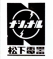

NATIONAL（ ナショナル）/TECHNICS（テクニクス）/PANASONIC（ パナソニック）
総合家電メーカーである旧松下電器産業のオーディオブランド。1918年に松下幸之助
により設立・創業。1927年より「ナショナル」の商号を使用してきた。オーディオに関しては1970年頃から「テクニクス」ブランドを使用、当初はスピーカーのユニット供給メーカーとしての色彩が強かった（*1）。1970年代にリニアフェーズ型を盛んに開発したり、1980年代に大型の平面スピーカーを開発するなどスピーカーを得意としたほか、国内最大級の家電メーカーとしてオーディオ及びビジュアル機器のあらゆるジャンルに製品を送り込んでいる。
現在、社名にもなっている「パナソニック」は元もとは輸出用のブランドだったが、1980年代末頃より、国内でも普及価格帯の製品に対して使いはじめ、やがて高級オーディオの衰退とともにメインのブランドとなり、「テクニクス」のほうがＤＪ用機器等の局所的なブランドとなっている(*2)。
＊1 同社の1970年代前半のカタログの中にはスピーカーユニットとヘッドフォンを対象とするものが存在する。管理人の手元にあるカタログでこのパターンはフォステクスぐらいしかない。なお1980年代半ばまで同社のヘッドフォンに使われた型番は「EAH」であり、スピーカーユニットに使われていた型番は「EAS」、コンポーネントスピーカーが「SB」だったので、スピーカーユニットに準じた扱いだったのかもしれない。
＊2 2010年にＤＪ用機器の中核だったSL-1200Mk6の生産終了で、ほぼ「ブランド」として終焉したが、2014年より高級オーディオ用ブランドとして再開された。ヘッドフォンも発売されたようだ。
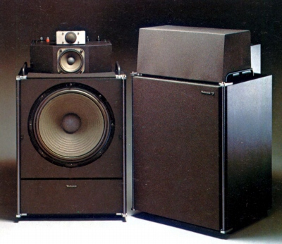
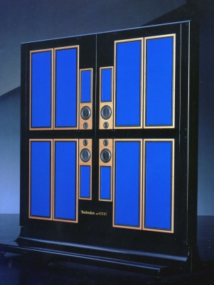
（左 SB-7000 右 AFP1000) ヘッドフォンに関しては家電系メーカーの常で当初は「ナショナル」ブランドで発売していたが、比較的早く「テクニクス」ブランドに切り替えた。その後オーディオ本体に合わせ、1990年頃からは「パナソニック」が主流となるが、このブランド移行期間に、一時的に「ナショナル」ブランドも復活している。また現在（2009年5月）でも、DJ用ヘッドフォンでは「テクニクス」ブランドのものが残っている。
機種構成の特徴は1980年代後半からごく最近まで、２ウェイ型ヘッドホンをフラグシップ機に採用してきたこと。また、現在のようなバランスド・アーマチュア型では珍しいくないが、通常のインナーイヤー型で２ウェイ型を複数用意したのもこのブランドぐらいしか思いつかない。その他、ヘッドフォンについて盛り上がった1970年代後半には「頭内定位」解消を目指してアンビエンスコントローラーとそれに最適化したヘッドフォンを用意したことがあげられる。
PANASONIC（ パナソニック）の製品を以下のように分類する。（この分類は個人的な意見で、メーカーの分類ではありません）
なおパナソニックの1970年より以前の製品については資料が現時点では手元にほとんどない。
�T.NATIONAL（ ナショナル）時代の製品
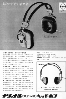
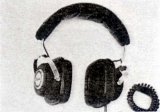
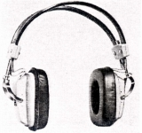
（左 EAH-60 右 EAH-65)
�U.TECHNICS（テクニクス）時代の製品
�@初期の製品
ナショナル時代の製品と同じようなデザインの製品群。なおこのブランドで現時点で確認できる唯一のコンデンサー型EAH-80は、パイオニアのSE-100J(1971年）に次ぐ、国産エレクトレットコンデンサー型の草分け的存在。エレクトレット型としては膜エレクトレット型に属する。
EAH-44 EAH-66
（２ウェイ型） EAH-88
（コンデンサー型） EAH-80
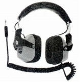 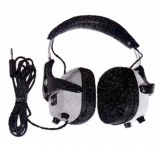 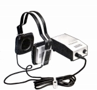
�A第２世代機
このブランド初のオープンエア型と4チャンネル機を含む第２世代機。製品コードが3桁に移行した。このあたりからデザインの独自性が明確になってきた。
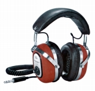
(EAH-230)
（オープンエア型） EAH-330 EAH-350 EAH-370
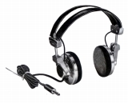
(EAH-370)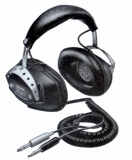
(EAH-400)
�B第３世代（アンビエンスコントローラー対応機種）
このブランドで初めてのドーム型ユニット採用機群。アンビエンスコントローラーSH-3040にあわせた特性（インピーダンス＝125Ω）の製品だった。アンビエンスコントローラーはヘッドフォン特有の頭内定位の改善手段の一つ。ただしスピーカー再生用のコントローラーSH-3060も存在する。この世代のEAH-300、320、340以外でも当時のテクニクスブランドのヘッドフォンにインピーダンス＝125Ωが多かったのは（*）はアンビエンスコントローラー対応が原因だったのかもしれない。
＊インピーダンス＝125Ωのヘッドフォン
EAH-510、EAH-520、EAH-T4、EAH-T7、EAH-T11など

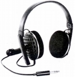
（アンビエンスコントローラ） SH-3040 SH-3045
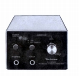
(SH-3040)
�C第４世代
アコースティックPEEフィルムを振動板に採用した機種等。アコースティックPEEフィルムはポリエステル・エーテル系の素材で1980年代初頭には従来よく使用されたデュポンのマイラーに変わる素材を追求する動きがあった。同様なものにDENON（
デンオン、デノン）の「High-M.F.（ハイム)」がある。EAH-510/520はデュアルコーンを採用した機種。EAH-710/720は生録等を意識したモニタータイプ。
（オープンエア型） EAH-360 EAH-510 EAH-520
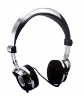
(EAH-520)＊EAH-510/520のラインに属すると思われるEAH-500というモデルが存在する。輸出用モデルらしい。
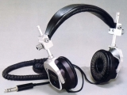
(EAH-720)＊海外サイトにはEAH-810/820/830というモデルが登場する。「リニアドライブ」ヘッドフォンとされており、添付された画像では明確なことはわからないが、動電全面駆動型らしい。EAH-820/830はEAH-710/720とアーム、カプセルのデザインに共通性を感じるもの。EAH-810はヘッドバンド等の簡素化がみられる。輸出用モデルらしいが、EAH-01やEAH-T7と似たモデルと一緒の画像があり、1980年頃のモデルのようだ。
�D第５世代
小型軽量機の流行に対応したモデル(EAH-01/09)の導入と、アコスティックPEEフィルムユニット使用モデルのデザイン近代化(EAH-Tシリーズ）。
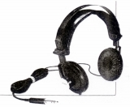
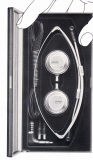
(EAH-09)
�E第6世代
後に国内有数の機種数を誇るインナーイヤー型(EAH-Zシリーズ）が導入開始と、EAH-Tシリーズの軽量化モデルの追加。EAH-T15にはこの当時の同社のスピーカーに採用されていたハニカム平面振動板が採用されている。
 （EAH-T15のハニカム振動板）
（EAH-T15のハニカム振動板）
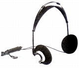
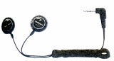
(EAH-Z5)
＊EAH-220、EAH-300、EAH-340、EAH-370、EAH-T8について豊永尚輝 氏所有機の画像を使用しました。ありがとうございます。またEAH-350についてイベントで撮影した画像を使用しました。撮影及び掲載をご許可いただき、ありがとうございました。
�V.NATIONAL（ナショナル）時代の製品（1980年代初頭？〜87年）
�@NATIONAL（ナショナル）ブランドの復活
1980年代に入り、ウーキングステレオ用ヘッドフォンの台頭にあわせ、NATIONAL（ナショナル）のヘッドフォンが「EAH」型番で復活を果たした。TECHNICS（テクニクス）ブランドのEAH-01より下位に位置するEAH-253が1982年に発売された。
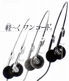
(EAH-253)�A統一ブランド時代（1984年〜87年）
1984年秋に新製品はすべて再びナショナルブランドでヘッドフォンが販売されるようになった。型番は従来の「EAH」から以降のテクニクス、パナソニック共通で使われる「RP＊」となり、オーバーヘッド型は「RP-HT」、インナーイヤー型は「RH-HV」を使う。RH-HV70は後に2000年過ぎまで続く同社の近代的な２ウェイ型ヘッドフォンの第１号モデル。
＊「RP」型番について
松下（現 パナソニック）は「テクニクス」ブランドで純オーディオ製品扱いのヘッドフォンに「EAH」の型番を使用する一方で、ゼネラルオーディオのジャンル、たとえばラジカセやウーキングステレオ用のヘッドフォンなどでは「RP」型番を使用していたようだ。またこの型番でインナーイヤー型の先駆けとなるハイファイタイプのステレオイヤホンもあった。その他に非オーディオ用のヘッドフォンの型番で「RD」が存在する。
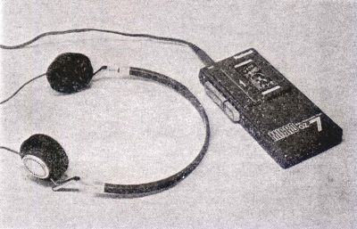
（RP-9508 マイクロカセットによるウーキングステレオの付属品。EAH-01に酷似。）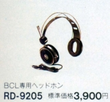
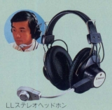
（RD型番の製品。BCL用のRD-9205と語学学習用のRD-9622)
（インナーイヤー型） RP-HV3 RP-HV4 RP-HV25 RP-HV26 RP-HV28 RP-HV30 RP-HV31 RP-HV35 RP-HV41 RP-HV70
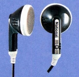
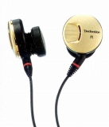
（左 RP-HV25 右 RP-HV70)
（小型軽量モデル） RP-HT33 RP-HT44 RP-HT55
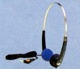
(RP-HT44)
（鑑賞用モデル） RP-HT8 RP-HT10 RP-HT15
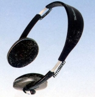
(RP-HT15)�W.TECHNICS（テクニクス）時代の製品その2（1987〜88年）
1985年に途切れたテクニクスブランドのヘッドフォンは1987年より、高級インナーイヤー型と密閉型モニター機のブランドとして再開した。
�@高級インナーイヤー型
２ウェイ型インナーイヤーのシリーズ
RP-HV50 RP-HV55 RP-HV75 RP-HV100
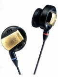
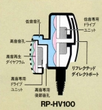
(RP-HV100)�A密閉型モニター機
２ウェイ型のRP-HT250を頂点とする密閉型のシリーズ。上級機には二重構造のイヤパッドが採用され、このイヤパッド構造はRP-F1やRP-F30に引き継がれた。
RP-HT90 RP-HT110 RP-HT120 RP-HT150 RP-HT200 RP-HT220 RP-HT250
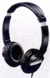
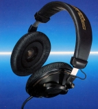
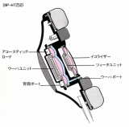
（左 RP-HT90 右 RP-HT250)
�X.PANASONIC（
パナソニック）時代の製品（1988年〜）
当初はナショナルブランドの路線を引き継ぐ形で1988年にスタートしたが、テクニクスブランドモデルの後継機を含め1989年以降の製品からは原則としてすべてこちらで発売されるようになった。
�@「ナショナル」ブランド路線のモデル
（インナーイヤー型） RP-HV32
（小型軽量モデル） RP-HT26 RP-HT36
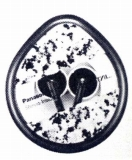
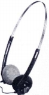
（左 RP-HV32 右 RP-HT36)
�A「テクニクス」ブランドの廉価な密閉型モニター機のモデル
RP-HT70 RP-HT75 RP-HT80 RP-HT95
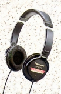
(RP-HT70)
�Bインナーイヤー型
ナショナル及びテクニクスブランドの新製品がなくなった1989年以降のインナーイヤー型。初期のモデルにはテクニクスブランドの2ウェイ型路線を引き継ぐRP-HV80、RP-HV650がある。なお1990年代後半より登場の「RP-HJ」シリーズは小型化した携帯プレイヤー向きの0.5m以下のショートコードとストレートプラグの機種。
RP-HV23 RP-HV27 RP-HV29 RP-HV34 RP-HV33 RP-HV48 RP-HV80
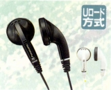
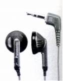
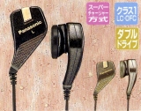
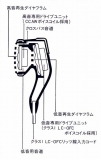
（左 RP-HV23 中央 RP-HV33 右 RP-HV80)RP-HV7 RP-HV230 RP-HV270 RP-HV290 RP-HV340 RP-HV480 RP-HV490 RP-HV530 RP-HV540 RP-HV580 RP-HV600
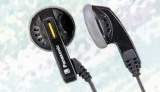
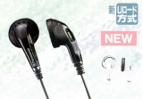
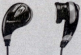
（左 RP-HV7 中央 RP-HV290 右 RP-HV600)RP-HV7D RP-HV330 RP-HV370 RP-HV390 RP-HV481 RP-HV491 RP-HV495 RP-HV650 RP-HV680
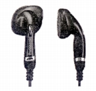
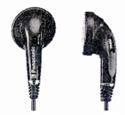
（左 RP-HV330 右 RP-HV481)RP-HV150 RP-HV170 RP-HV482 RP-HV493 RP-HV494
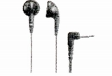
(RP-HV150)RP-HV235 RP-HV275 RP-HV295 RP-HV320 RP-HV333 RP-HJ333 RP-HJ335 RP-HV345
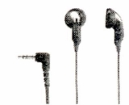
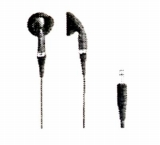
（左 RP-HV235 右 RP-HJ335)RP-HV335 RP-HV375 RP-HV395 RP-HV492
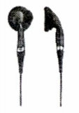
( RP-HV395)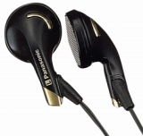
(RP-HJ530)RP-HJ237 RP-HV237 RP-HV287 RP-HJ313 RP-HV313 RP-HV347
（左 RP-HV237 右 RP-HV313)
�CRP-HS,HZシリーズ
ソニーのMDR-Aシリーズのようなバーチカルタイプや耳掛け型
RP-HS10 RP-HZ10 RP-HS15 RP-HZ15 RP-HS70 RP-HZ70
（左 RP-HS10 右 RP-HZ70)
�D小型軽量モデル
(RP-HT37)
(RP-HT28)
RP-HT16 RP-HT18 RP-HT29 RP-HT30 RP-HT31 RP-HT49 RP-HT60
（左 RP-HT16 右 RP-HT60)
�EX.B.Sシリーズ
ユニットの背面にX.B.S（EXTRA BASS
SYSTEM）と呼ぶ重低音用音道を設けた密閉型のシリーズ。中にはこの音道の開閉を切り替え、音質をコントロールする機種もあった。トップモデルは2ウェイ型のRP-F1。なおこのXBS技術をインナーイヤ型に搭載したのがRP-HV600、音質コントロール機能まで備えたのがRP-HV650。
RP-F1 RP-F3 RP-F5 RP-F12 RP-F15
（左 RP-F1 右 RP-F12)
(RP-HT96)
�Fプロセクトシリーズ
ユニットの背面にアフターバーナと呼ぶ重低音用音道を設けた密閉型のシリーズ。
(RP-F30)
�Gその他のモデル
・密閉型/オープンエア型切替タイプ
詳細は不明だが、密閉型の時とオープン型の時で重量が違うので、部品（イヤパッド等）の交換で切り替えるタイプと思われる。RP-HT117-K、RP-HT118はベースとなるオープン型。
RP-HT117-K RP-HT127-K RP-HT137-S
(RP-HT127-K)
(RP-HT128)
・廉価の密閉型
RP-HT76 RP-HT86 RP-HT240
(RP-HT86)
RP-HT300 RP-HT305 RP-HT400 RP-HT500 RP-HT700
(RP-HT500)
RP-HT242 RP-HT202 RP-HT205 RP-HT550 RP-HT850 RP-HT870 RP-HT1000
（左 RP-HT242 中央 RP-HT850 右 RP-HT1000)
・アクチュエーター内蔵機種
ゲームや映画の爆音等で振動を発生するアクチュエーター内蔵のヘッドフォン
RP-HT900 RP-HT930 RP-HT950
(RP-HT900)
・振動体感（VMSS)搭載機種
RP-HS900 RP-HZ910 RP-HT940
(RP-HS900)
・学校・図書館用機種
堅牢設計・抗菌仕様の密閉型
RP-HT126
(RP-HT126)
�Y.TECHNICS（テクニクス）時代の製品その3（1996〜）
テクニクスとパナソニックの併用が始まってから高級機にテクニクスを適用する方針もとられた。しかし高級オーディオ路線からの撤退で結果として業界標準となっていたアナログディスクプレイヤーのためかＤＪ機器に特化したブランドに変貌していった。ヘッドフォンについても1996年よりＤＪ向け機種が、テクニクスブランドで発売された。
(RP-DJ1200)